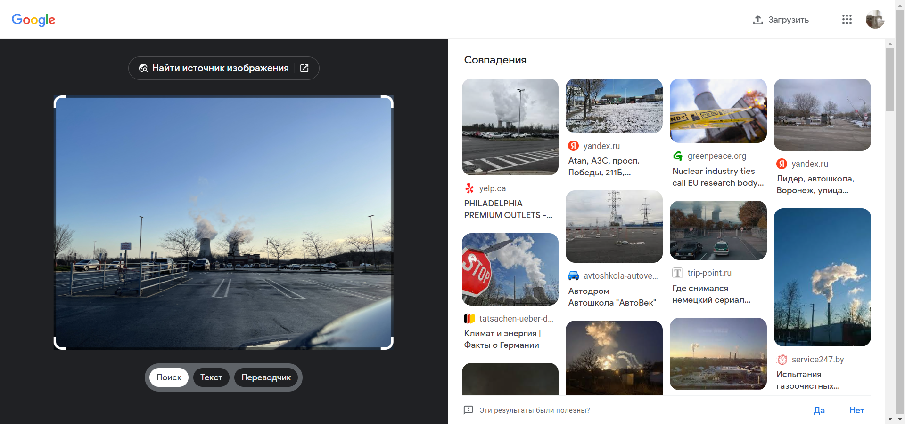
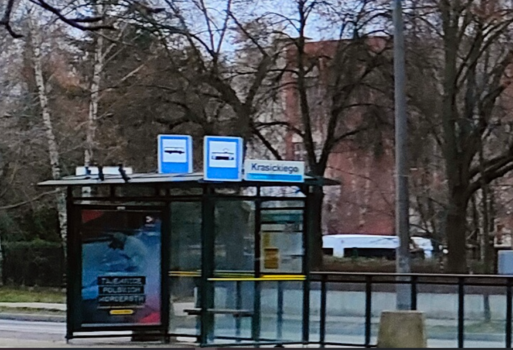
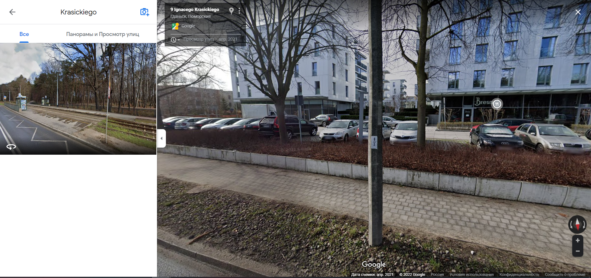
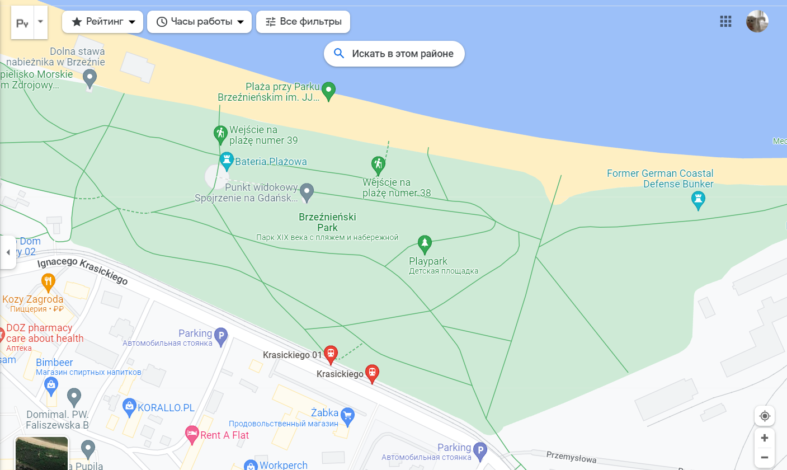

Категория OSINT
Что это такое? Автор: Кочева Елизавета (заголовок)
OSINT – тот класс заданий, в которых не нужно следовать определённым алгоритмам, здесь нужно думать по-своему. Многим кажется этот тип лёгким, однако, всё равно совершаются серьёзные ошибки при решении несложных тасков.
В этом случае поможет только нарешивание заданий, а также отработки внимательности.
При решении тасков типа OSINT в основном используются открытые и общедоступные источники информации. Данные, полученные из них, собираются и анализируются.
Примеры заданий
Приведу три примера с соревнований InfoSec 2022.
1. Наш агент прислал нам это изображение до того, как мы его потеряли. Пожалуйста, найдите гипер/супермаркет слева от него. flag{lowercase_name_of_the_supermarket}
К заданию приложено фото:

1a.png
Итак, как мы можем действовать, чтобы найти флаг?
Как самое простое, мы можем скачать картинку и поместить в любой поисковик, способный на поиск по фото. Но вообще, рекомендую прогонять фотографии через несколько поисковых систем, так больше вероятность того, что вы быстро найдёте решение.
Я выбрала Google. Вот, что он выдал:

Далее нужно посмотреть по совпадениям. Где наше фото больше всего сходится с результатами поиска? Здесь видно, что картинка в «Совпадениях» в левом верхнем углу очень похожа на то, что изображено на нашем фото.
Переходим по этой ссылке.
Видим, что нас перекинуло на страницу… чего? Правильно, Торгового центра, что подходит под условия нахождения флага. Пробуем ввести в поле ввода ответа название этого торгового центра и вуаля! Флаг найден.
Ответ: flag{philadelfia_premium_outlets}.
2. После этого фото мы потеряли его в парке. Как называется парк? флаг{имя_парка}. Например, если это парк Verkių, то флаг будет flag{park_verkių}.
И приложено фото:

Как же поступать здесь? А здесь нужно применить чуточку внимательности. Рассмотрим автобусную остановку получше.

Что мы видим? Название остановки. А теперь, пользуясь вновь открытым источником, ищем, в каких местах планеты есть остановки с таким названием.

Изучаем результаты.
Находим точку, которая по обзору улиц напоминает местность на нашей фотографии.

7 scrin5.png
Проверим обзор улиц подробнее?

Да, это то самое место.
Дело за малым – определить название этого парка по карте и флаг найден!

Ответ: flag{park_ brzeźnieński}
3. Мы сфотографировали этого мужчину на лошади, но не знаем, кто это. Узнайте об этом и дайте нам знать flag{name}
(Попробуйте самостоятельно найти флаг)
(ответ: flag{sinterklaas})